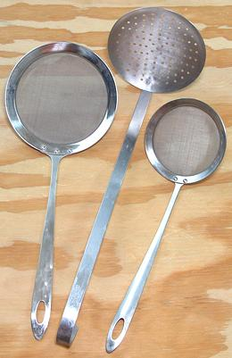

Skimmers

Skimmers are very important tools when making soup stock and in many
other ways, including small ones for skimming tea.
Soup Skimmer
This is the center device in the photo.
It is a kitchen workhorse anywhere soup stocks are made in volume,
particularly to skim off the foamy crud from the top of the water as
the makings for stock come to a boil.
Fine Asian Skimmers
These are right and left in the
photo. They have an amazingly fine wire fabric that strains similar to
muslin but many times faster. I use the large one as a general skimmer,
especially when making small batches of stock or parboiling beef. I
also use it as a strainer when pouring a finished stock through it before
reheating it and putting it up in jars. This eliminates even the smallest
particles that get through a regular strainer.
Spider Skimmer
This has its own
Spider Skimmer page, as it is used
mostly with oils, but it is also very good at removing things from
water, especially things that try to escape - it sneaks up on them
easily.
More on Kitchen Gear.
ke_skimmr1 180423 - www.clovegarden.com
©Andrew Grygus - agryg@clovegaden.com
Photos on this
page not otherwise credited are © cg1 -
Linking to and non-commercial use of this page permitted